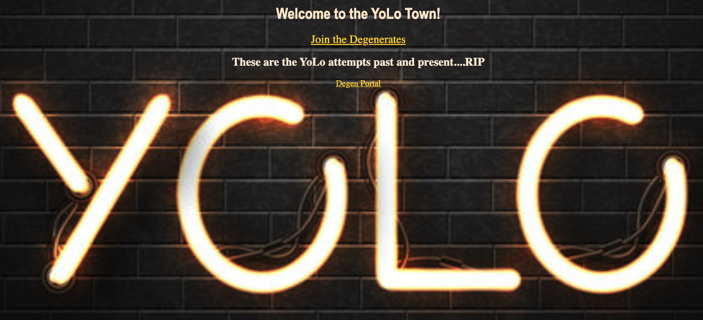

Mark D. Lalich
I am a dynamic, goal-driven Professional with a lifetime commitment to service.
After dedicating nine years to my country in Naval Nuclear Submarine leadership and foreign relation missions,
I set out to embed good-will capital by educating fellow sailors on financial well-being.
These passions led me to a career empowering individuals and organizations in financial planning, proper investment diversification, and risk management.
PORTFOLIO

GreenRock Asset Management
GreenRock Asset Management is a registered investment advisor focused on tangible results in the investing and financial strategy space.

Skip Rock Capital
Skip Rock Capital is a private fund focused on Community-Centric Investment, Empowering Sustainable Development, and Cultivating Meaningful Transfromation

Ape Street
Ape Street & Ape St DAO seed ventures via a social impact NFT ecosystem.

YoLo App
Degenerates welcome to the roulette wheel of wall street!

Ape Food
Our innovative platform harmonizes the appetites of individuals and families with the expertise of local microgreen growers and homegrown food producers.
In addition to fostering a sustainable food culture, we invite contributors to partake in our donation-driven approach, enhancing the accessibility of wholesome nutrition for all.
StonkyBvB
What does the BvB-8-Ball think?, do you dare ask the $tonks destiny?